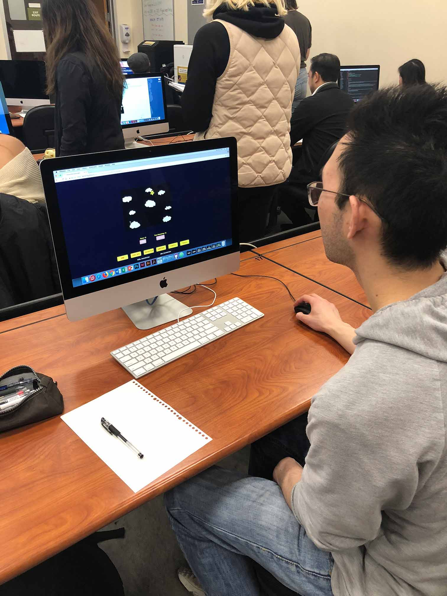

my audience was enjoyed the game and the design of my project. They said it is simple to understand the game and kind of playful. They played several times while they are waiting for the time.
I learn a lot of things from the audience. I will change the star little bit slow it down and make size bigger. I will also use the graph as the game over image and take out "statics" Nav. I will work on more of the information page.
